The advancement of 3D language fields has enabled intuitive interactions with 3D scenes via natural language. However, existing approaches are typically limited to small-scale environments, lacking the scalability and compositional reasoning capabilities necessary for large, complex urban settings. To overcome these limitations, we propose GeoProg3D, a visual programming framework that enables natural language-driven interactions with city-scale high-fidelity 3D scenes. GeoProg3D consists of two key components: (i) a Geography-aware City-scale 3D Language Field (GCLF) that leverages a memory-efficient hierarchical 3D model to handle large-scale data, integrated with geographic information for efficiently filtering vast urban spaces using directional cues, distance measurements, elevation data, and landmark references; and (ii) Geographical Vision APIs (GV-APIs), specialized geographic vision tools such as area segmentation and object detection. Our framework employs large language models (LLMs) as reasoning engines to dynamically combine GV-APIs and operate GCLF, effectively supporting diverse geographic vision tasks. To assess performance in city-scale reasoning, we introduce GeoEval3D, a comprehensive benchmark dataset containing 952 query-answer pairs across five challenging tasks: grounding, spatial reasoning, comparison, counting, and measurement. Experiments demonstrate that GeoProg3D significantly outperforms existing 3D language fields and vision-language models across multiple tasks. To our knowledge, GeoProg3D is the first framework enabling compositional geographic reasoning in high-fidelity city-scale 3D environments via natural language.
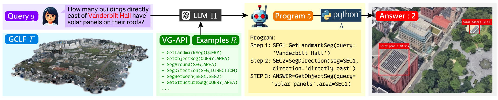
Framework overview. Given a user query, GeoProg3D generates a visual program via LLM in-context learning. The program operates GCLF by combining Geographical Vision APIs (GV-APIs) and answers the query.
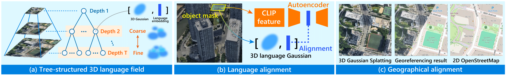
GCLF structure. (a) Coarse-to-fine tree structure to represent 3D scenes. Each node represents a pair of a 3D Gaussian and a language embedding. (b) Language alignment using CLIP features. (c) Geographical alignment using OpenStreetMap.
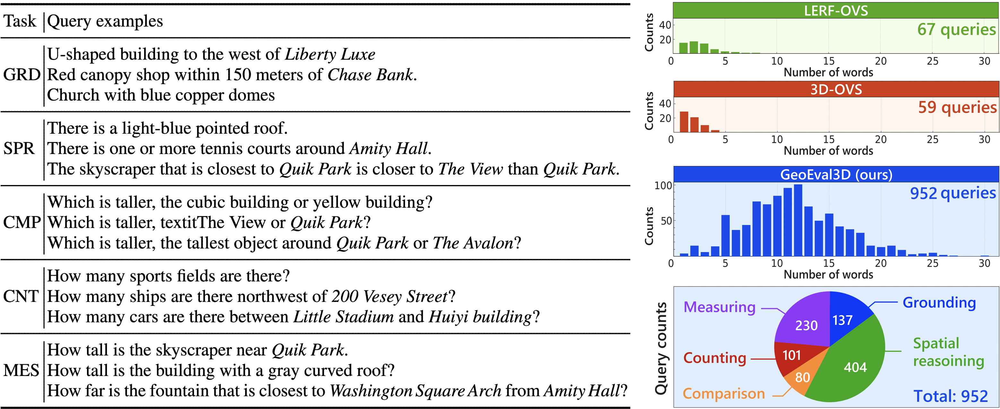
We propose a new dataset GeoEval3D which is collected by human annotaters. GeoEval3D contains 952 unique queries covering five tasks. Queries include more words than those in the previous evaluation datasets, indicating complexity of the proposed.
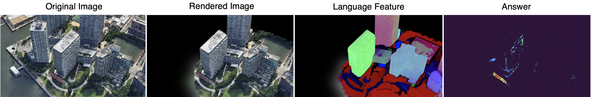
Query: red lettering signboard within 100 meters of The View
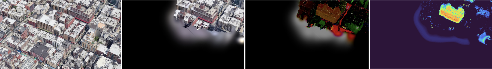
Query: The canopy shop southeast of New York Mart
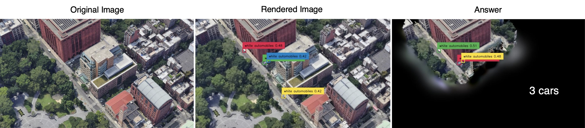
Query: How many white automobiles are there around Elmer Holmes Bobst Library?
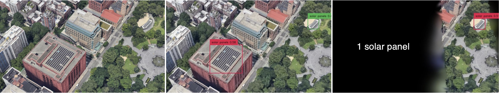
Query: How many solar panels are there directly east of Vanderbilt Hall?
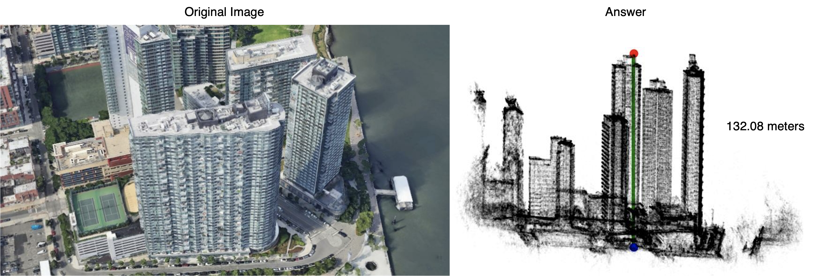
Query: How tall is the skyscraper that is closest to 45-45 Center Blvd?
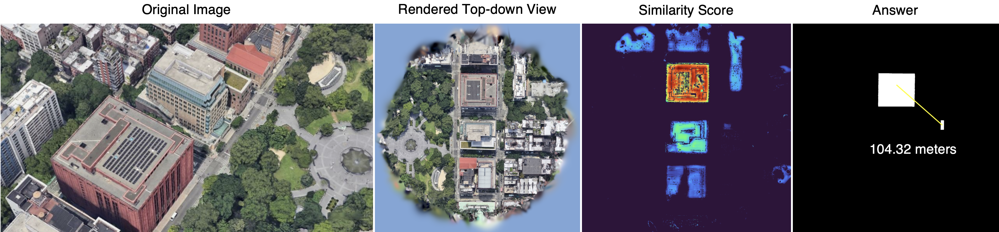
Query: How far is DO, Cookie Dough Confections from building with solar panels?
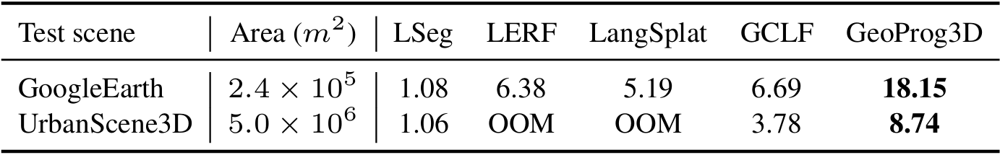
This table shows the 3D semantic segmentation performance on the GRD task. Average IoU scores (%) are reported.
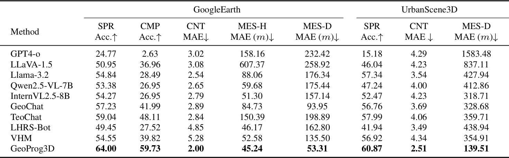
This table shows the performance of spatial reasoning (SPR), comparison (CMP), counting (CNT), and measurement (MES) tasks.
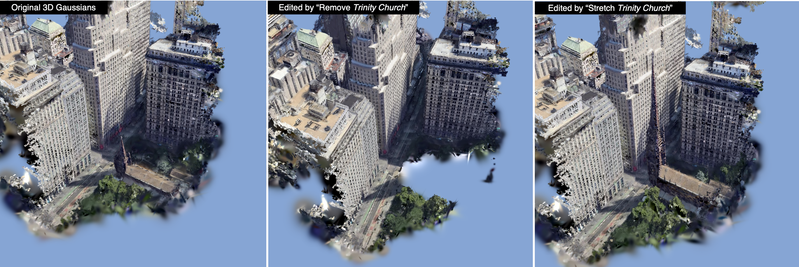
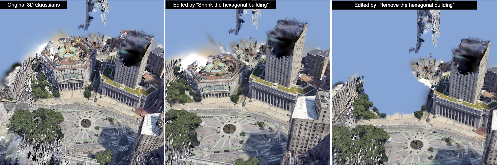
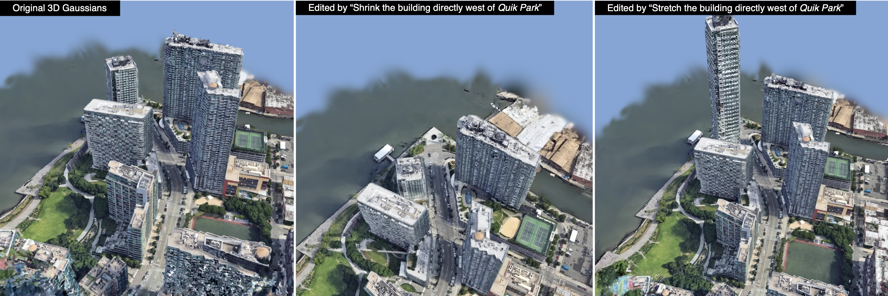
@misc{yasuki2025geoprog3d,
title={GeoProg3D: Compositional Visual Reasoning for City-Scale 3D Language Fields},
author={Shunsuke, Yasuki and Taiki, Miyanishi and Nakamasa, Inoue and Shuhei, Kurita and Koya, Sakamoto and Daichi, Azuma and Masato, Taki and Yutaka Matsuo},
booktitle={Proceedings of the IEEE/CVF International Conference on Computer Vision (ICCV)},
year={2025},
primaryClass={cs.CV},
url={https://arxiv.org/abs/2506.23352},
}